정보처리기사(구) (2011-03-20 기출문제)
1과목: 데이터 베이스
1. 데이터 모델의 구성 요소 중 데이터베이스에 표현될 대상으로서의 개체 타입과 개체 타입들 간의 관계를 기술한 것은?
- structure
- operations
- constraints
- mapping
(정답률: 68%)

2. 3단계 스키마 중 다음 설명에 해당하는 것은?
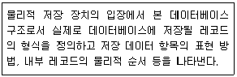
- internal schema
- conceptual schema
- external schema
- tree schema
(정답률: 82%)
3. 릴레이션의 특성에 대한 설명으로 옳지 않은 것은?
- 한 릴레이션에 포함된 튜플들은 모두 상이하다.
- 한 릴레이션에 포함된 튜플 사이에는 순서가 없다.
- 한 릴레이션을 구성하는 애트리뷰트 사이에는 일정한 순서가 있다.
- 모든 애트리뷰트 값은 원자값이다.
(정답률: 82%)
4. 후보키에 대한 설명으로 옳지 않은 것은?
- 릴레이션의 기본키와 대응되어 릴레이션 간의 참조 무결성 제약조건을 표현하는데 사용되는 중요한 도구이다.
- 릴레이션의 후보키는 유일성과 최소성을 모두 만족해야 한다.
- 하나의 릴레이션에 속하는 모든 튜플들은 중복된 값을 가질 수 없으므로 모든 릴레이션은 반드시 하나 이상의 후보키를 갖는다.
- 릴레이션에서 튜플을 유일하게 구별해 주는 속성 또는 속성들의 조합을 의미한다.
(정답률: 47%)
5. 정규화 과정에서 A→B 이고, B→C 일 때 A→C 인 관계를 제거하는 관계는?
- 1NF → 2NF
- 2NF → 3NF
- 3NF → BCNF
- BCNF → 4NF
(정답률: 69%)
6. 자료가 다음과 같이 주어졌을 때 선택 정렬(selection sort)을 적용하여 오름차순으로 정렬할 경우 pass 2를 진행한 후의 정렬된 값으로 옳은 것은?
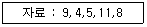
- 4, 5, 9, 8, 11
- 4, 5, 9, 11, 8
- 4, 5, 8, 11, 9
- 4, 5, 8, 9, 11
(정답률: 81%)
7. 로킹(Locking) 단위에 대한 설명으로 옳은 것은?
- 로킹 단위가 크면 병행성 수준이 낮아진다.
- 로킹 단위가 크면 병행 제어 기법이 복잡해진다.
- 로킹 단위가 작으면 로크(Lock)의 수가 적어진다.
- 로킹은 파일 단위로 이루어지며, 레코드 또는 필드는 로킹 단위가 될 수 없다.
(정답률: 65%)
8. 다음은 학생이라는 개체의 속성을 나타내고 있다. 여기서 “성명”을 기본키로 사용하기 곤란한 이유가 가장 타당한 것은?
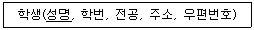
- 동일한 성명을 가진 학생이 두 명 이상 존재할 수 있다.
- 성명은 기억하기 어렵다.
- 성명을 정렬하는데 많은 시간이 소요된다.
- 성명은 기억 공간을 많이 필요로 한다.
(정답률: 89%)
9. SQL은 사용 용도에 따라 DDL, DML, DCL로 구분할 수 있다. 다음 중 성격이 다른 하나는?
- UPDATE
- ALTER
- DROP
- CREATE
(정답률: 77%)
10. 분산데이터베이스 시스템에 대한 설명으로 옳지 않은 것은?
- 사용자나 응용 프로그램이 접근하려는 데이터나 사이트의 위치를 알아야 한다.
- 중앙의 컴퓨터에 장애가 발생하더라도 전체 시스템에 영향을 끼치지 않는다.
- 중앙 집중 시스템보다 구현하는데 복잡하고 처리 비용이 증가한다.
- 중앙 집중 시스템보다 시스템 확장이 용이하다.
(정답률: 61%)
11. 릴레이션 R의 차수(Degree)가 3, 카디널리티(Cardinality)가 3, 릴레이션 S의 차수가 4, 카디널리티가 4일 때, 두 릴레이션을 카티션 프로덕트(cartesian product)한 결과 릴레이션의 차수와 카디널리티는?
- 4, 4
- 7, 7
- 7, 12
- 12, 12
(정답률: 70%)
12. 시스템카탈로그에 대한 설명으로 옳지 않은 것은?
- 시스템카탈로그는 DBMS가 스스로 생성하고 유지한다.
- 시스템카탈로그는 시스템 테이블이기 때문에 일반 사용자는 내용을 검색할 수 없다.
- 시스템카탈로그에 저장된 정보를 메타 데이터라고 한다.
- 시스템카탈로그를 자료 사전이라고도 한다.
(정답률: 83%)
13. 파일조직기법 중 순차파일에 대한 설명으로 옳지 않은 것은?
- 파일 탐색시 효율이 우수하며, 대화형 처리에 적합하다.
- 레코드가 키 순서대로 편성되어 취급이 용이하다.
- 연속적인 레코드의 저장에 의해 레코드 사이에 빈 공간이 존재하지 않으므로 기억장치의 효율적인 이용이 가능하다.
- 필요한 레코드를 삽입, 삭제, 수정하는 경우 파일을 재구성해야 하므로 파일 전체를 복사해야 한다.
(정답률: 72%)
14. 이진 탐색 알고리즘의 특징이 아닌 것은?
- 탐색 효율이 좋고 탐색 시간이 적게 소요된다.
- 검색할 데이터가 정렬되어 있어야 한다.
- 피보나치수열에 따라 다음에 비교할 대상을 선정하여 검색한다.
- 비교 횟수를 거듭할 때마다 검색 대상이 되는 데이터의 수가 절반으로 줄어든다.
(정답률: 68%)
15. 인덱스순차파일의 인덱스영역 중 다음 설명에 해당하는 것은?
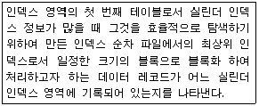
- 기본 데이터 영역
- 트랙 인덱스 영역
- 실린더 인덱스 영역
- 마스터 인덱스 영역
(정답률: 52%)
16. 데이터베이스 설계 단계 중 저장 레코드 양식 설계, 레코드 집중의 분석 및 설계, 접근 경로 설계와 관계되는 것은?
- 논리적 설계
- 요구 조건 분석
- 물리적 설계
- 개념적 설계
(정답률: 65%)
17. 트랜잭션의 특성 중 둘 이상의 트랜잭션이 동시에 병행 실행되는 경우 어느 하나의 트랜잭션 실행 중에 다른 트랜잭션의 연산 끼어들 수 없음을 의미하는 것은?
- atomicity
- consistency
- isolation
- durability
(정답률: 74%)
18. 다음 문장의 () 안 내용으로 옳게 짝지어진 것은?
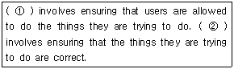
- ① : Security, ② : Integrity
- ① : Security, ② : Revoke
- ① : Integrity, ② : Security
- ① : Integrity, ② : Revoke
(정답률: 64%)
19. 다음 설명이 의미하는 것은?
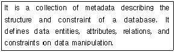
- DBMS
- Schema
- Transaction
- Domain
(정답률: 78%)
20. 관계대수에 대한 설명으로 옳지 않은 것은?
- 릴레이션을 처리하기 위한 연산의 집합으로 피연산자가 릴레이션이고 결과도 릴레이션이다.
- 원하는 정보와 그 정보를 어떻게 유도하는가를 기술하는 절차적 특징을 가지고 있다.
- 일반 집합 연산과 순수 관계 연산이 있다.
- 수학의 Predicate Calculus 에 기반을 두고 있다.
(정답률: 63%)
2과목: 전자 계산기 구조
21. 재귀호출(recursive call) 프로그램에 해당하는 것은?
- 한 루틴(routine)이 반복될 때.
- 한 루틴(routine)이 자기를 다시 호출할 때.
- 다른 루틴(routine)이 다른 루틴을 호출할 때.
- 한 루틴(routine)에서 다른 루틴으로 갈 때.
(정답률: 80%)
22. 플립플롭 중 입력단자가 하나이며, 1 이 입력될 때마다 출력단자의 상태가 바뀌는 것은?
- RS 플립플롭
- T 플립플롭
- D 플립플롭
- M/S 플립플롭
(정답률: 64%)
23. 회로의 논리함수가 다수결 함수(Majority Function)를 포함하고 있는 것은?
- 전가산기
- 전감산기
- 3-to-8 디코더
- 우수 패리티 발생기
(정답률: 53%)
24. 다음 중 프로그램 제어와 가장 밀접한 관계가 있는 것은?
- memory address register
- index register
- accumulator
- status register
(정답률: 52%)
25. fetch cycle에서 일어나는 micro instruction 이다. 실행 순서가 옳은 것은? (단, MAR : Memory Address Register, MBR : Memory Buffer Register, PC : Program Counter, OPR : Operation Code Register)
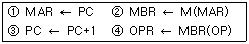
- ②→①→③→④
- ①→②→③→④
- ②→④→①→③
- ③→①→②→④
(정답률: 46%)
26. 메가플롭스(MFLOPS)에 대한 설명으로 옳은 것은?
- 1클록펄스 간에 실행되는 부동소수점 연산의 수를 10만을 단위로 하여 나타낸 수.
- 1클록펄스 간에 실행되는 고정소수점 연산의 수를 10만을 단위로 하여 나타낸 수.
- 1초간에 실행되는 부동소수점 연산의 수를 100만을 단위로 하여 나타낸 수.
- 1초간에 실행되는 고정소수점 연산의 수를 100만을 단위로 하여 나타낸 수.
(정답률: 58%)
27. 우선순위 인터럽트 운영 방식이 아닌 것은?
- LCFS(Last Come First Service)
- FCFS(First come First Service)
- Masking Schema
- Fixed Service
(정답률: 53%)
28. 다음 중 Unicode와 ASCII 코드와의 관계를 가장 잘 설명한 것은?
- Unicode는 ASCII를 인식할 수 있지만 ASCII에서는 Unicode의 특수문자를 인식할 수 없다.
- Unicode는 ASCII를 인식할 수 없고 ASCII에서도 Unicode의 특수문자를 인식할 수 없다.
- Unicode는 ASCII를 인식하고 ASCII에서도 Unicode의 특수문자를 인식할 수 있다.
- Unicode는 ASCII를 인식할 수 없지만 ASCII에서는 Unicode의 특수문자를 인식할 수 있다.
(정답률: 64%)
29. 다음 불 함수를 간략화한 결과는?
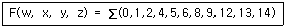
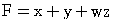
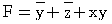
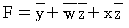
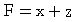
(정답률: 41%)
30. 비교적 속도가 빠른 자기 디스크에 연결하는 채널은?
- 바이트 채널
- 셀렉터 채널
- 서브 채널
- 멀티플렉서 채널
(정답률: 50%)
31. 컴퓨터 주기억장치의 용량이 256MB라면 주소 버스는 최소한 몇 Bit이어야 하는가?
- 20 Bit 이상
- 24 Bit 이상
- 26 Bit 이상
- 28 Bit 이상
(정답률: 49%)
32. 다음은 인터럽트 체제의 동작을 나열한 것이다. 수행 순서를 올바르게 표현한 것은?
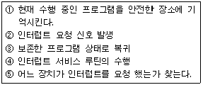
- ②→⑤→①→③→④
- ②→①→④→⑤→③
- ②→④→①→⑤→③
- ②→①→⑤→④→③
(정답률: 72%)
33. 다음은 명령어 형식에 대한 설명이다. 옳은 것은?
- 명령은 보통 OP 코드부분과 오퍼랜드 부분으로 나누며 오퍼랜드는 수행해야 할 동작을 명시하는 부분이고, OP코드는 연산의 대상물이다.
- 기억장치의 주소나 레지스터를 지정하거나 실제 데이터 값을 가지고 있는 부분이 오퍼랜드이다.
- 오퍼랜드의 비트 수가 n 비트인 경우 2n 가지의 서로 다른 동작을 수행할 수 있다.
- 오퍼랜드에는 유효번지를 결정하기 위한 모드 비트를 가질 수 없다.
(정답률: 47%)
34. 다음 중 잘못 연결한 것은?
- Associative Memory - Memory Access 속도 향상
- Virtual Memory - Memory 공간 확대
- Cache Memory - Memory Access 속도 향상
- Memory Interleaving - Memory 공간 확대
(정답률: 59%)
35. 1의 보수 표현 방식에 의해 8비트로 표현된 9+(-24)의 연산 수행시 그 결과는?
- 0100 1111
- 1111 0000
- 1000 1111
- 0111 0000
(정답률: 45%)
36. 명령어 파이프라인 단계 수가 4 이고 파이프라인 클록(clock) 주파수가 1MHz 인 경우 10개의 명령어들이 파이프라인 기법에서 실현될 경우 소요 시간으로 가장 적합한 것은?
- 4㎲
- 8㎲
- 13㎲
- 40㎲
(정답률: 34%)
37. 하나의 명령 사이클을 실행하는데 2개의 머신 사이클이 필요하다고 했을 때 CPU 클록 주파수를 10MHz로 동작시켰다. 이 때 1개의 명령 사이클을 실행하는데 걸리는 시간은? (단. 각각의 머신 사이클은 5개의 머신스테이트로 구성되어 있다.)
- 1㎲
- 2㎲
- 10㎲
- 20㎲
(정답률: 40%)
38. 컴퓨터 시스템과 주변 장치간의 데이터 전송 방식에 해당되지 않는 것은?
- 루프 입출력(loop I/O) 방식
- DMA(Direct Memory Access) 방식
- 인터럽트 입출력(interrupt I/O) 방식
- 프로그램 입출력(programmed I/O) 방식
(정답률: 45%)
39. 중재동작이 끝날 때마다 모든 마스터들의 우선순위가 한 단계씩 낮아지고 가장 우선순위가 낮았던 마스터가 최상위 우선순위를 가지도록 하는 가변우선순위 방식은?
- 동등 우선순위(Equal Priority) 방식
- 임의 우선순위(Random Priority) 방식
- 회전 우선순위(Rotating Priority) 방식
- 최소-최근 사용(Least Recently Used) 방식
(정답률: 62%)
40. 마이크로 오퍼레이션과 관련이 적은 것은?
- 수평 마이크로 명령
- 수직 마이크로 명령
- 나노 명령
- 기가 명령
(정답률: 67%)
3과목: 운영체제
41. 분산 운영체제의 구조 중 완전 연결(Fully Connection)에 대한 설명으로 옳지 않은 것은?
- 모든 사이트는 시스템 안의 다른 모든 사이트와 직접 연결된다.
- 사이트들 간의 메시지 전달이 매우 빠르다.
- 기본비용이 적게 든다.
- 사이트 간의 연결은 여러 회선이 존재하므로 신뢰성이 높다.
(정답률: 73%)
42. 스레드의 특징으로 옳지 않은 것은?
- 실행 환경을 공유시켜 기억장소의 낭비가 줄어든다.
- 프로세스 외부에 존재하는 스레드도 있다.
- 하나의 프로세스를 여러 개의 스레드로 생성하여 병행 성을 증진시킬 수 있다.
- 프로세스들 간의 통신을 향상시킬 수 있다.
(정답률: 60%)
43. UNIX는 어떤 디렉토리 구조를 갖는가?
- tree structured directory
- two level directory
- hashing structure directory
- single level directory
(정답률: 73%)
44. 교착상태의 해결 방안 중 다음 사항에 해당하는 것은?
- prevention
- avoidance
- detection
- recovery
(정답률: 56%)
45. 파일 시스템에 대한 설명으로 옳지 않은 것은?
- 사용자가 파일을 생성하고 수정하며 제거할 수 있도록 한다.
- 한 파일을 여러 사용자가 공동으로 사용할 수 있도록 한다.
- 사용자가 적합한 구조로 파일을 구성할 수 없도록 제한한다.
- 사용자와 보조기억장치 사이에서 인터페이스를 제공한다.
(정답률: 67%)
46. 다중 처리기 운영체제 구성에서 주/종(Master/Slave)처리기 시스템에 대한 설명으로 옳지 않은 것은?
- 주프로세서는 입/출력과 연산을 담당한다.
- 종프로세서는 입/출력 위주의 작업을 처리한다.
- 주프로세서만이 운영체제를 수행한다.
- 주프로세서에 문제가 발생하면 전체 시스템이 멈춘다.
(정답률: 63%)
47. 하나의 프로세스가 작업 수행 과정에서 수행하는 기억 장치 접근에서 지나치게 페이지 폴트가 발생하여 프로세스 수행에 소요되는 시간보다 페이지 이동에 소요되는 시간이 더 커지는 현상은?
- 스레싱(Thrashing)
- 위킹 셋(Working set)
- 세마포어(Semaphore)
- 교환(Swapping)
(정답률: 71%)
48. HRN(Highest Response ratio Next) 방식으로 스케줄링 할 경우, 입력된 작업이 다음과 같을 때 우선순위가 가장 높은 것은?
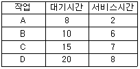
- A
- B
- C
- D
(정답률: 69%)
49. 보안 메커니즘 중 합법적인 사용자에게 유형 혹은 무형의 자원을 사용하도록 허용할 것인지를 확인하는 제반 행위로서, 대표적 방법으로는 패스워드, 인증용 카드, 지문 검사 등을 사용하는 것은?
- Cryptography
- Authentication
- Digital Signature
- Threat Monitoring
(정답률: 59%)
50. 프로세스의 정의로 옳지 않은 것은?
- 프로시저가 활동 중인 것
- PCB를 가진 프로그램
- 동기적 행위를 일으키는 주체
- 프로세서가 할당되는 실체
(정답률: 68%)
51. UNIX 파일 시스템의 inode에서 관리하는 정보가 아닌 것은?
- 파일의 링크 수
- 파일이 만들어진 시간
- 파일의 크기
- 파일이 최초로 수정된 시간
(정답률: 72%)
52. 주기억장치 관리기법인 First-fit, Best-fit, Worst-fit 방법을 각각 적용할 경우 9K의 프로그램이 할당될 영역이 순서대로 옳게 짝지어진 것은?
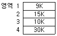
- 1, 1, 4
- 1, 4, 2
- 4, 3, 4
- 4, 3, 2
(정답률: 78%)
53. 컴퓨터 시스템 성능을 향상시키기 위한 스풀링(SPOOLing)에 대한 설명으로 옳지 않은 것은?
- 여러 작업의 입출력과 계산을 동시에 수행할 수 있다.
- 스풀 공간으로 주기억장치의 일부를 사용하며, 소프트웨어적인 기법이다.
- 제한된 수의 입출력 장치 사용으로 인한 입출력 작업의 지연을 방지한다.
- 저속의 입출력 장치에서 읽어온 자료를 우선 중간의 저장장치에 저장하는 방식이다.
(정답률: 43%)
54. 파일 디스크립터에 대한 설명으로 옳지 않은 것은?
- 파일 제어 블록이라고도 한다.
- 시스템에 따라 다른 구조를 갖는다.
- 파일시스템이 관리하므로 사용자가 직접 참조할 수 없다.
- 모든 파일이 하나의 파일 디스크립터를 공용한다.
(정답률: 46%)
55. 3개의 페이지 프레임(Frame)을 가진 기억장치에서 페이지 요청을 다음과 같은 페이지 번호 순으로 요청했을 때 교체 알고리즘으로 FIFO 방법을 사용한다면 몇 번의 페이지 부재(Fault)가 발생하는가? (단, 현재 기억장치는 모두 비어 있다고 가정한다.)
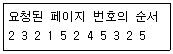
- 7번
- 8번
- 9번
- 10번
(정답률: 55%)
56. 운영체제의 목적 중 다음 설명에 해당하는 것은?
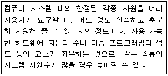
- reliability
- throughput
- turn-around time
- availability
(정답률: 59%)
57. 초기 헤드 위치가 50 이며 트랙 0 방향으로 이동 중이다. 디스크 대기 큐에 다음과 같은 순서의 액세스 요청이 대기 중일 때 모든 처리를 완료하기 위한 헤드의 총 이동거리가 370일 경우 사용된 디스크 스케줄링 기법은? (단, 가장 안쪽 트랙 0, 가장 바깥쪽 트랙 200)
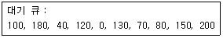
- SCAN
- SSTF
- FIFO
- C-SCAN
(정답률: 51%)
58. 가상기억장치 구현에서 세그먼테이션(Segmentation) 기법의 설명으로 옳지 않은 것은?
- 주소 변환을 위해서 페이지 맵 테이블(Page Map Table)이 필요하다.
- 세그먼테이션은 프로그램을 여러 개의 블록으로 나누어 수행한다.
- 각 세그먼트는 고유한 이름과 크기를 갖는다.
- 기억장치 보호 키가 필요하다.
(정답률: 53%)
59. 페이지교체 기법 중 참조 비트와 변형 비트가 필요한 것은?
- FIFO
- LRU
- LFU
- NUR
(정답률: 58%)
60. 운영체제의 기능으로 거리가 먼 것은?
- 자원을 효율적으로 사용하기 위하여 자원의 스케줄링 기능을 제공한다.
- 사용자와 시스템 간의 편리한 인터페이스를 제공한다.
- 데이터를 관리하고 데이터 및 자원의 공유 기능을 제공한다.
- 두 개 이상의 목적 프로그램을 합쳐서 실행 가능한 프로그램으로 만든다.
(정답률: 74%)
4과목: 소프트웨어 공학
61. 자료 흐름도의 요소 중 다음 설명에 해당하는 것은?
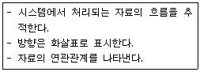
- process
- data store
- data flow
- terminator
(정답률: 75%)
62. 소프트웨어 재공학 활동 중 소프트웨어 기능을 변경하지 않으면서 소프트웨어를 형태에 맞게 수정하는 활동으로서 상대적으로 같은 추상적 수준에서 하나의 표현을 다른 표현 형태로 바꾸는 것은?
- 분석
- 역공학
- 이식
- 재구성
(정답률: 59%)
63. 정형 기술 검토(FTR)의 지침 사항으로 옳지 않은 것은?
- 의제를 제한한다.
- 논쟁과 반박을 제한한다.
- 문제 영역을 명확히 표현한다.
- 참가자의 수를 제한하지 않는다.
(정답률: 74%)
64. 다음 설명에 해당하는 결합도는?
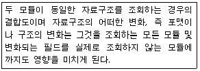
- control coupling
- content coupling
- stamp coupling
- common coupling
(정답률: 38%)
65. 객체 지향 기법에서 하나 이상의 유사한 객체들을 묶어서 하나의 공통된 특성을 표현한 것을 무엇이라고 하는가?
- 함수
- 메소드
- 메시지
- 클래스
(정답률: 73%)
66. 효과적 모듈 설계를 위한 유의사항으로 옳지 않은 것은?
- 모듈의 기능을 예측할 수 있도록 정의한다.
- 모듈은 단일 입구와 단일 출구를 갖도록 설계한다.
- 결합도는 강하게, 응집도는 약하게 설계하여 모듈의 독립성을 확보할 수 있도록 한다.
- 유지보수가 용이해야 한다.
(정답률: 73%)
67. 다음 설명에 해당하는 것은?
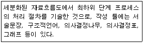
- ERD
- Mini-spec
- DD
- STD
(정답률: 52%)
68. 화이트 박스 시험(White Box Testing)의 설명으로 옳지 않은 것은?
- 프로그램의 제어구조에 따라 선택, 반복 등의 부분들을 수행함으로써 논리적 경로를 점검한다.
- 모듈안의 작동을 직접 관찰할 수 있다.
- 소프트웨어 산물의 각 기능별로 적절한 정보영역을 정하여, 적합한 입력에 대한 출력의 정확성을 점검한다.
- 원시 코드의 모든 문장을 한번 이상 수행함으로써 진행된다.
(정답률: 49%)
69. 소프트웨어 비용 산정 기법 중 개발 유형으로 organic, semi-detach, embedded 로 구분되는 것은?
- PUTNAM
- COCOMO
- FP
- SLIM
(정답률: 70%)
70. 객체지향 기법에서 캡슐화(encapsulation)에 대한 설명으로 옳지 않은 것은?
- 캡슐화를 하면 객체간의 결합도가 높아진다.
- 캡슐화된 객체들은 재사용이 용이하다.
- 프로그램 변경에 대한 오류의 파급효과가 적다.
- 인터페이스가 단순해진다.
(정답률: 67%)
71. 시스템의 구성 요소 중 출력된 결과가 예정된 목표를 만족하지 못할 경우 목표 달성을 위해 반복 처리하는 것을 의미하는 것은?
- Process
- FeedBack
- Control
- Output
(정답률: 76%)
72. 위험 모니터링(monitoring)의 의미로 가장 적절한 것은?
- 위험을 이해하는 것
- 위험요소들에 대하여 계획적으로 관리하는 것
- 위험 요소 징후들에 대하여 계속적으로 인지하는 것
- 첫 번째 조치로 위험을 피할 수 있도록 하는 것
(정답률: 70%)
73. 여러 번의 개발 과정을 거처 완벽한 최종 소프트웨어를 개발하는 점진적 모형으로 보헴이 제안한 소프트웨어 생명주기 모델은?
- 4GT Model
- Spiral Model
- Waterfall Model
- Prototype Model
(정답률: 55%)
74. 소프트웨어 형상관리(Configuration management)에 관한 설명으로 거리가 먼 것은?
- 소프트웨어에서 일어나는 수정이나 변경을 알아내고 제어하는 것을 의미한다.
- 소프트웨어 개발의 전체 비용을 줄이고, 개발 과정의 여러 방해 요인이 최소화하도록 보증하는 것을 목적으로 한다.
- 형상관리를 위하여 구성된 팀을 “chief programmer team"이라고 한다.
- 형상관리에서 중요한 기술 중의 하나는 버전 제어 기술이다.
(정답률: 59%)
75. 재공학의 목적으로 적합하지 않은 것은?
- 소프트웨어의 수명을 연장시킨다.
- 소프트웨어의 유지보수성을 향상시킨다.
- 소프트웨어 개발 기간을 연장시켜 비용을 증가시킨다.
- 소프트웨어에서 사용하고 있는 기술을 향상시킨다.
(정답률: 78%)
76. 사용자의 요구사항 분석 작업이 어려운 이유로 거리가 먼 것은?
- 개발자와 사용자 간의 지식이나 표현의 차이가 커서 상호 이해가 쉽지 않다.
- 사용자의 요구는 예외가 거의 없어 열거와 구조화가 어렵지 않다.
- 사용자의 요구사항이 모호하고 부정확하며, 불완전하다.
- 개발하고자 하는 시스템 자체가 복잡하다.
(정답률: 63%)
77. 소프트웨어 품질 목표 중 정해진 조건하에서 소프트웨어 제품의 일정한 성능과 자원 소요량의 관계에 관한 속성, 즉 요구되는 기능을 수행하기 위해 필요한 자원의 소요정도를 의미하는 것은?
- Usability
- Reliability
- Functionality
- Efficiency
(정답률: 50%)
78. 효과적 프로젝트 관리를 위한 3P로 옳은 것은?
- patient, problem, process
- parameter, problem, process
- problem, process, power
- people, problem, process
(정답률: 78%)
79. 소프트웨어 재사용에 대한 설명으로 옳지 않은 것은?
- 개발 시간과 비용을 감소시킨다.
- 프로젝트 실패의 위험을 줄여 준다.
- 재사용 부품의 크기가 작을수록 재사용률이 낮다.
- 소프트웨어 개발자의 생산성을 증가시킨다.
(정답률: 71%)
80. 럼바우의 객체 지향 분석 기법에서 상태 다이어그램을 사용하여 시스템의 행위를 기술하는 모델링은?
- dynamic modeling
- object modeling
- functional modeling
- static modeling
(정답률: 48%)
5과목: 데이터 통신
81. 문자의 시작과 끝에 각각 START 비트와 STOP 비트가 부가되어 전송의 시작과 끝을 알려 전송하는 방식은?
- 비동기식 전송
- 동기식 전송
- 전송 동기
- PCM 전송
(정답률: 55%)
82. 다음 중 A, B, C, D 문자 전송 시 홀수 패리티 비트검사에서 에러가 발생하는 문자는?
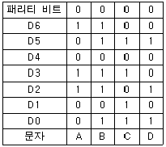
- A
- B
- C
- D
(정답률: 66%)
83. 패킷교환망에서 패킷이 적절한 경로를 통해 오류 없이 목적지까지 정확하게 전달하기 위한 기능으로 옳지 않은 것은?
- 흐름 제어
- 에러 제어
- 경로 배정
- 집중화
(정답률: 63%)
84. 데이터 통신에서 오류의 발생 유무만을 판정하는 오류검출 기법으로 옳지 않은 것은?
- Parity Check
- Cyclic Redundancy Check
- Block Sum Check
- Forward Error Correction Check
(정답률: 53%)
85. 전송시간을 일정한 간격의 시간 슬롯(time slot)으로 나누고, 이를 주기적으로 각 채널에 할당하는 다중화 방식은?
- 주파수 분할 다중화
- 동기식 시분할 다중화
- 코드 분할 다중화
- 공간 분할 다중화
(정답률: 75%)
86. 전송오류제어 중 오류가 발생한 프레임뿐만 아니라 오류검출 이후의 모든 프레임을 재전송하는 ARQ 방식은?
- Go-back-N ARQ
- Stop-and-Wait ARQ
- Selective Repeat ARQ
- Non-Selective Repeat ARQ
(정답률: 66%)
87. IP(Internet Protocol) 프로토콜에 대한 설명 중 틀린 것은?
- 신뢰성이 부족한 비 연결형 서비스를 제공하기 때문에 상위 프로토콜에서 이러한 단점을 보완해야 한다.
- IP 프로토콜은 직접전송과 간접전송으로 나누어지며, 직접전송은 패킷의 최종목적지와 같은 물리적인 네트워크에 연결된 라우터에 도달할 때 까지를 말한다.
- 송신자가 여러 개인 데이터 그램을 보내면서 순서가 뒤바뀌어 도달할 수 있다.
- 각 데이터 그램이 독립적으로 처리되고 목적지까지 다른 경로를 통해 전송될 수 있다.
(정답률: 46%)
88. HDLC 에서 사용되는 프레임의 유형이 아닌 것은?
- Information Frame
- Supervisory Frame
- Unnumbered Frame
- Control Frame
(정답률: 51%)
89. 다음이 설명하고 있는 전송 방식은?
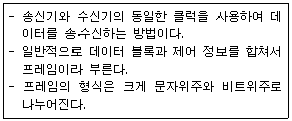
- 비동기식 전송
- 동기식 전송
- 주파수식 전송
- 비트식 전송
(정답률: 56%)
90. 패킷 교환 방식 중 가상 회선 방식에 대한 설명으로 옳은 것은?
- 네트워크 내의 노드나 링크가 파괴되거나 상실되면 다른 경로를 이용한 전송이 가능하므로 유연성을 갖는다.
- 경로 설정에 시간이 소요되지 않으므로 한 스테이션에서 소수의 패킷을 보내는 경우에 유리하다.
- 매 패킷 단위로 경로를 설정하기 때문에 네트워크의 혼잡이나 교착 상태에 보다 신속하게 대처한다.
- 패킷들은 경로가 설정된 후 경로에 따라 순서적으로 전송되는 방식이다.
(정답률: 38%)
91. 토큰링 방식에 사용되는 네트워크 표준안은?
- IEEE 802.2
- IEEE 802.3
- IEEE 802.5
- IEEE 802.6
(정답률: 61%)
92. 다중화 방식 중 타임 슬롯(time slot)을 사용자의 요구에 따라 동적으로 할당하여 데이터를 전송할 수 있는 것은?
- Pulse Code Multiplexing
- Statistical Time Division Multiplexing
- Synchronous Time Division Multiplexing
- Frequency Division Multiplexing
(정답률: 42%)
93. TCP/IP 모델에 해당하는 계층이 아닌 것은?
- Network Access
- Transport
- Application
- Session
(정답률: 40%)
94. OSI 7계층 중 데이터링크계층의 프로토콜에 해당하는 것은?
- TCP
- DTE/DCE
- HDLC
- UDP
(정답률: 52%)
95. TCP/IP 모델의 인터넷계층에 대한 설명으로 틀린 것은?
- IP프로토콜을 사용한다.
- 경로선택과 독주제어 기능을 수행한다.
- 최선형의 비연결형 패킷 전달 서비스를 제공한다.
- End to End의 통신서비스를 제공한다.
(정답률: 46%)
96. ISO(국제표준기구)의 OSI 7계층 중 통신망의 경로(routing) 선택 및 통신량의 폭주 제어를 담당하는 계층은?
- 응용 계층
- 네트워크 계층
- 표현 계층
- 물리 계층
(정답률: 68%)
97. PCM 은 아날로그 신호의 크기를 표본화, 양자화한 뒤 몇 개의 2진수 비트를 전기 신호로 송출하는 방식이다. 양자화란 어떠한 과정 인가?
- 원신호의 전압 값을 평균하여 일정 값의 전기 신호로 변환 시키는 과정이다.
- 전기 신호의 전류를 이에 비례하는 2진수 값으로 변환하는 과정이다.
- 아날로그 신호의 진폭을 일정한 시간 간격으로 추출하는 과정이다.
- 표본화 과정을 거친 신호의 진폭을 이산 값으로 변화시키는 과정이다.
(정답률: 56%)
98. 라우팅 프로토콜인 OSPF(Open Shortest Path First)에 대한 설명으로 옳지 않은 것은?
- OSPF 라우터는 자신의 경로 테이블에 대한 정보를 LSA라는 자료구조를 통하여 주기적으로 혹은 라우터의 상태가 변화되었을 때 전송한다.
- 라우터 간에 변경된 최소한의 부분만을 교환하므로 망의 효율을 저하시키지 않는다.
- 도메인내의 라우팅 프로토콜로서 RIP가 가지고 있는 여러 단점을 해결하고 있다.
- 경로수(Hop)가 16으로 제한되어 있어 대규모 네트워킹에 부적합하다.
(정답률: 59%)
99. 이동통신 가입자가 셀 경계를 지나면서 신호의 세기가 작아지거나 간섭이 발생하여 통신 품질이 떨어져 현재 사용 중인 채널을 끊고 다른 채널로 절체하는 것을 의미하는 것은?
- Mobile Control
- Location registering
- Hand off
- Multi-Path fading
(정답률: 68%)
100. 효율적인 전송을 위하여 넓은 대역폭(혹은 고속 전송 속도)을 가진 하나의 전송링크를 통하여 여러 신호(혹은 데이터)를 동시에 실어 보내는 기술은?
- 집중화
- 다중화
- 부호화
- 변조화
(정답률: 70%)